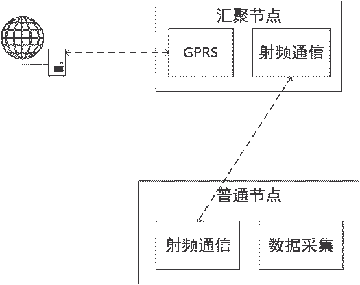

“水质监测”是我这学期的实习题目，我想通过一系列的文章记录整个的开发过程。这是第一篇，主要记录整体的结构设想和一些关键点。
首先是整体的框图

图中主要包含三个部分，分别为普通节点、汇集节点和服务器。为简化起见，普通节点只画了一个，实际上可以是多个。每个普通节点需要实现的功能为：
- 采集温度、PH值和溶解氧值；
- 将采集到的数据通过射频模块传输至汇聚节点。
汇集节点负责接收各个普通节点传送过来的采集数据，并通过GPRS模块将数据发送至服务器。服务器端主要将接收到的数据存入数据库，同时通过Web访问的方式将数据以用户友好的方式呈现出来。
通过上述分析，整个系统的难点有以下几点：
PH值和溶解氧传感器接口的转换
因为此类传感器多是BNC接口，要传输至单片机需要额外的电路转换。
GPRS通过TCP协议传输时数据包的设计
其实射频通信时的数据包设计也是要考虑的，要保证数据包的完整和准
确。Web的设计
Web设计不仅要考虑数据如何组织查询，如何显示，对界面的设计也比较繁琐，因为上学期做过个小网站所以深有体会。
以上只是前期需要解决的问题，这些问题不解决后面的根本无法继续，至于后期的则是自行设计电路板，代码整合和优化。这些都是以后的事，在此不再讨论。